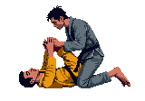
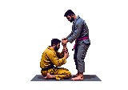
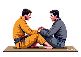

Sprite samples
Three test position sprites from PixelLab's quick generator, shown at 2× in the dex's portrait frame.

Reads as guard, but the legs aren't clearly locked around the waist and the top player is leaning in, not posted up.

Bottom player is kneeling in front of a standing partner. No shin across the shin at all.

Two people sitting facing each other. The legs aren't entangled, so it could be any seated position.